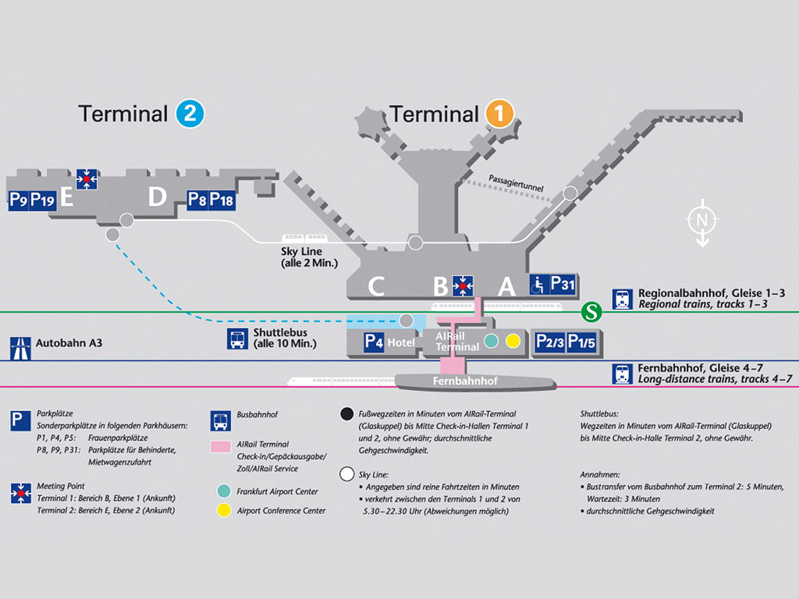

Cómo Llegar
Para los que venís en tren o en avión, especialmente para los no alemanes, os dejamos algunos comentarios:
Ya no hay más gastos de roaming en Europa, con lo que podéis usar internet para buscar las conexiones con google maps. La Deutsche Bahn tiene página en español y aplicación móvil (DB Navigator), incluye información sobre tranvías (Straßenbahn), metro (U-Bahn) y autobuses. A veces también es útil la red de transportes municipal SWBDesde el aeropuerto de Colonia/Bonn
Hay un autobús (SB60) a la salida de la terminal: En la misma planta por la que se sale, hay que ir hacia la iquierda, salir y cruzar en frente, es la dársena número 5. El autobús sale cada media hora, el último a las 00:16, y cuesta como 8 euros. Tarda en torno a 22 minutos en llegar cerca de los hoteles. La parada más cercana al hotel es la Brüdergasse/Bertha-von-Suttner-Platz.
También se puede coger un taxi por unos 45-50€ euros si no hay más autobuses. Suele haber algún taxi de 8 plazas (Großraumtaxi), si no se pueden pedir por teléfono al +49 228 55 55 55, esa es la compañía de taxis de Bonn y nos han dicho que no cobran ni por llamarles ni por pedir el de mayor capacidad.
Desde el aeropuerto de Düsseldorf
Cada hora hay un tren directo regional (RE) por unos 18€ que tarda una hora (lo mejor es mirar la web de la Deutsche Bahn). Hay un ticket de grupo NRW-SchönerTag para un máximo de 5 personas por 44€. Hay otras conexiones pero con transbordos.Desde el aeropuerto de Frankfurt
Salen múltiples trenes. Los tiempos varían entre una hora y diez minutos hasta casi dos horas, con precios entre 20€ a 60€ aproximadamente.
El aeropuerto es muy grande, los trenes que vienen para acá salen de la Fernbahnhof (estación de larga distancia), está frente a la T1. Si vais a la T2 tenéis que sumarle un poco de tiempo para coger el autobús (Shuttlebus) o el Skyline. Y a veces compensa comprar billetes de tren flexibles.
Sobre los trenes en Alemania
Normalmente todo es muy sencillo, pero a veces puede ocurrir que:- cambien de vía (con lo que hay que mirar los paneles, gleis es vía)
- que el tren tenga dos partes que se separen y haya que subirse a la correcta, pero eso sólo pasa con los ICEs
- que el asiento esté reservado: en los IC/ICE hay una indicación sobre los asientos que pone el número de la plaza y la estación donde se va a sabir alguién. Ahí ayuda saber el orden de las paradas por si todavía falta tiempo para que se suban. Si el sistema de reservas no funciona bien ese día puede poner ggf. reserviert = quizás reservado.
- que haya retrasos (Verspätung ) o incluso se cancele un tren (der Zug fällt aus)
Sobre el precio de los billetes: Con los trenes rápidos (IC/ICE) suele haber dos tarifas, una con oferta y otra fléxible, más cara, pero que te permite coger un tren del mismo tipo para el mismo trayecto todo el día, viene bien si no sabes cuándo aterrizas.
Una cosa más, la estación de tren de Bonn es bastante fea pero el resto de la ciudad creemos que os va a gustar :)